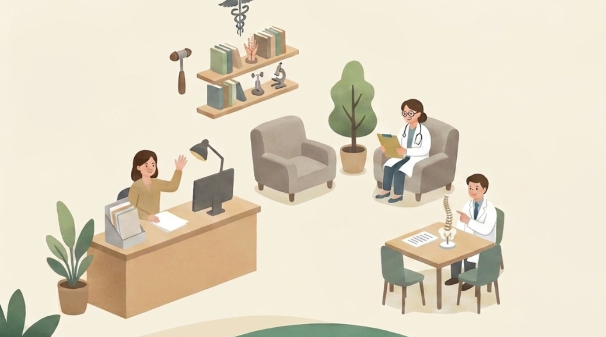

Our Team
● 정신건강전문요원 1급
● 정신건강간호사 1급
● 인지행동치료사
● 심리상담사 1급
● New York RN
● 한국 간호사
● 보건교사 2급
● 보육교사 1급
● 요양보호사 1급
(현) 마음,인지행동심리상담센터 / 센터장
(전) 행복한우리동네의원(정신과) / 청소년 낮병동 관리 및 상담, 정신건강교육
(전) 아주대학교 의료원 근무
(전) 화홍병원 / 정신과 병동 설립맴버
(전) 용인정신병원 / 만성정신과 병동 근무
(전) 성남사랑의병원(정신과) / 병원형 위센터 TF팀
(전) 정신간호사회 / 사단법인 사람사랑 사무국장
(전) 이음병원 / 정신과 병동 근무
(전) 수원자살예방센터 /청소년 자살예방프로그램 개발 연구원
(전) 충남광역정신건강증진센터 / 만성정신질환자 재활프로그램 개발 연구원
(전) 용인시 보건소 / 만성질환자 및 가족 관리
(전) 삼성서울병원 근무
비폭력센터 / 치료자를 위한 트라우마 워크샵
한국인지행동치료학회 / CBT 교육
메타연구소 / CBT 교육 및 수련
미국 시애틀 다기센터 / 상실, 애도, 자살예방 수련
수용-전념 치료 워크샵
독일 트라우마 치료 KBT 수료
국제 IPT(대인관계치료) training
공감대화카드 워크숍
미국 시애틀 다기센터 / 아동 애도 지지 트레이닝
용인정신병원 / 정신건강간호사 수련
성남 옐림상담센터 / 상담교육 및 수련